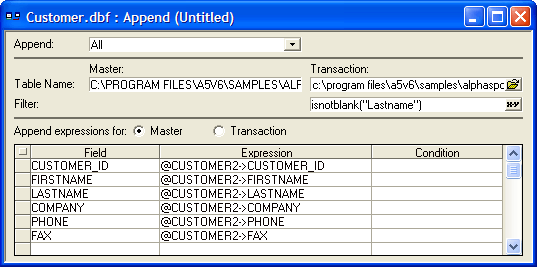

Smart Buttons
You will see many smart buttons in Alpha Five. Smart buttons can directly
accept input, like any other type-in text control, but they also have
built-in functions to help you along. One example is a File-select
 smart button in the Append Builder.
For example, you are defining an Append operation to copy records from
one table to add to another. An Append operation has multiple prompts
for you to fill in order to define the operation. One is the Transaction
table prompt, where you enter the filename of the table from which you
are copying records.
smart button in the Append Builder.
For example, you are defining an Append operation to copy records from
one table to add to another. An Append operation has multiple prompts
for you to fill in order to define the operation. One is the Transaction
table prompt, where you enter the filename of the table from which you
are copying records.

At this prompt, you can either type in the filename, or you can click
the File-select  smart button
on the right. If you click the smart button, a drop-down list appears
where you can select from the available tables. Selecting "
smart button
on the right. If you click the smart button, a drop-down list appears
where you can select from the available tables. Selecting "
See Also